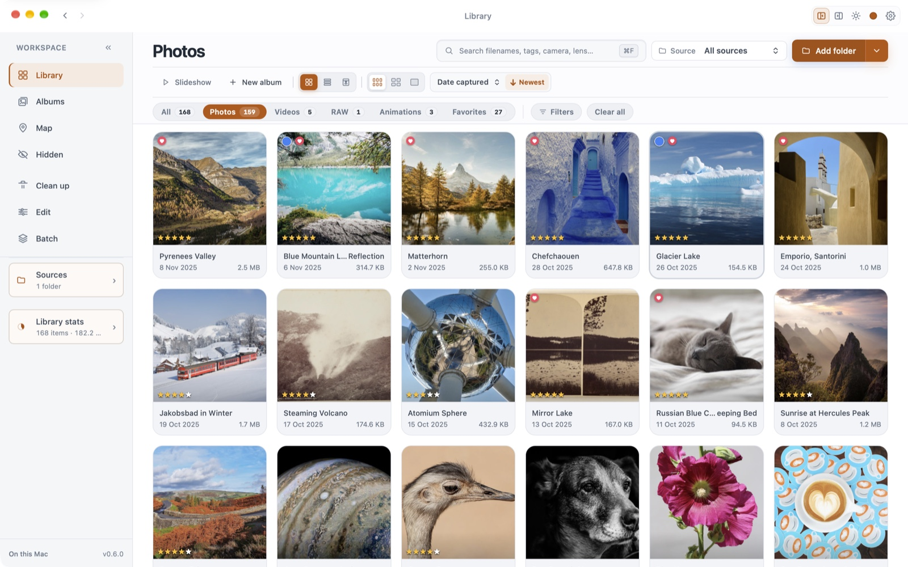
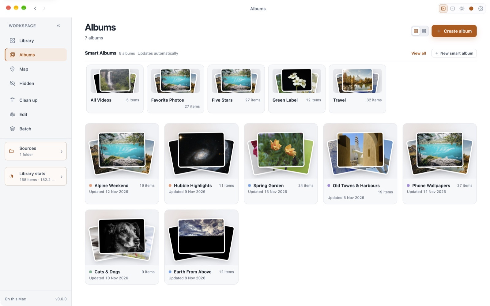
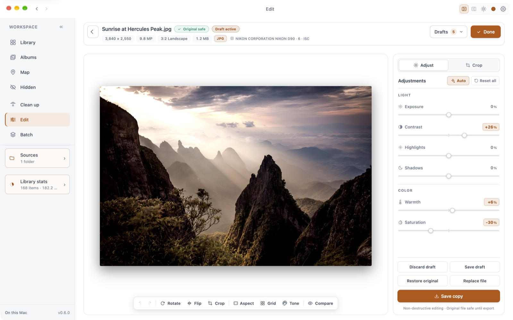
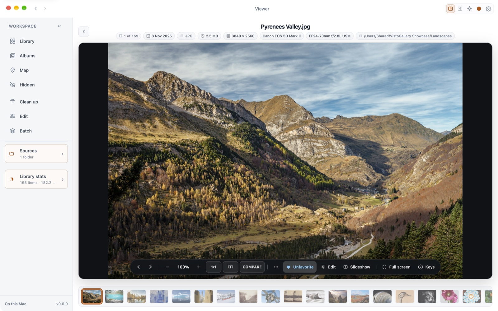
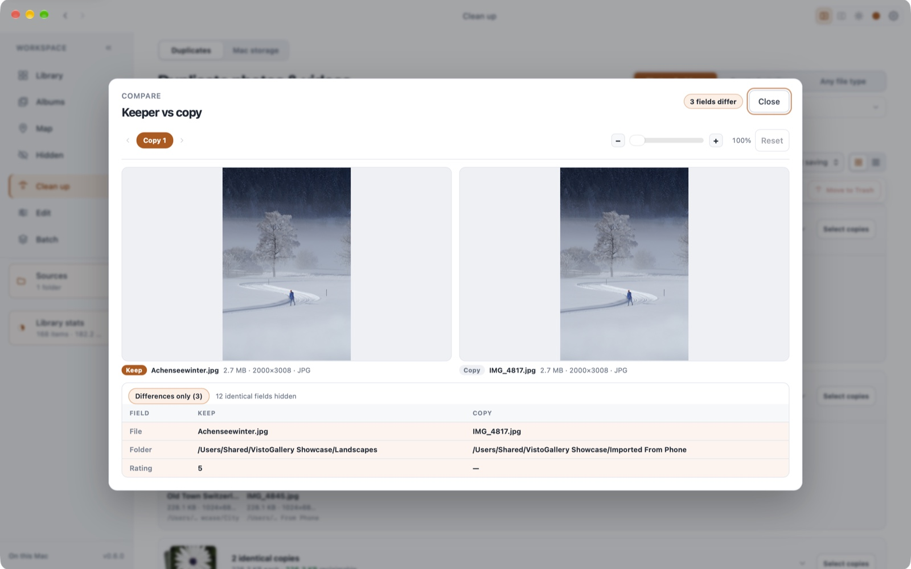
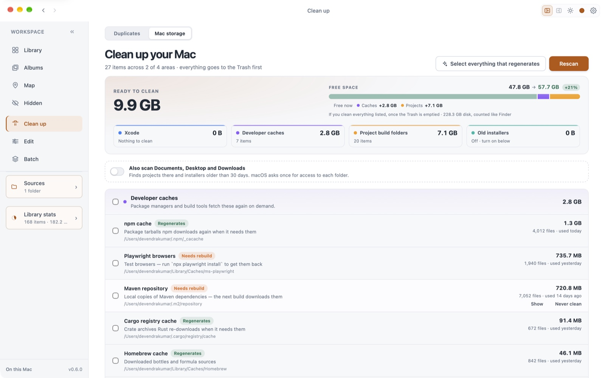
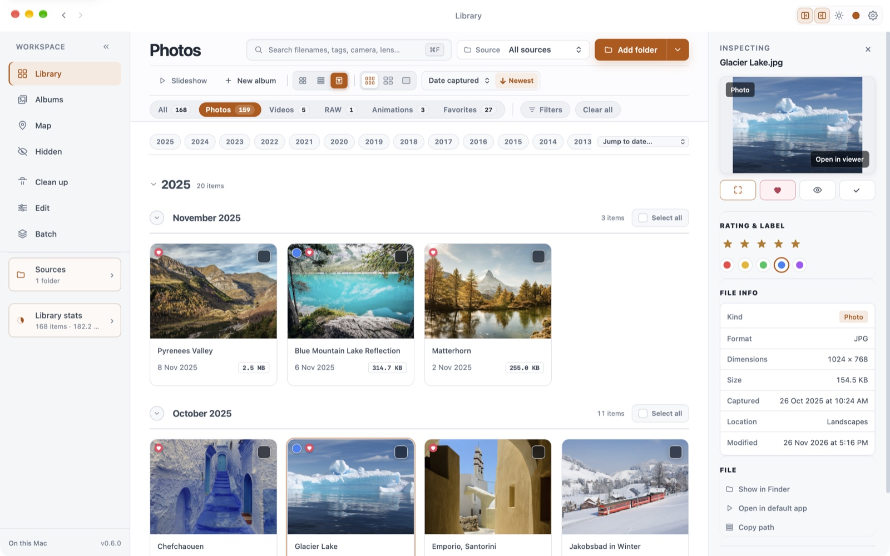
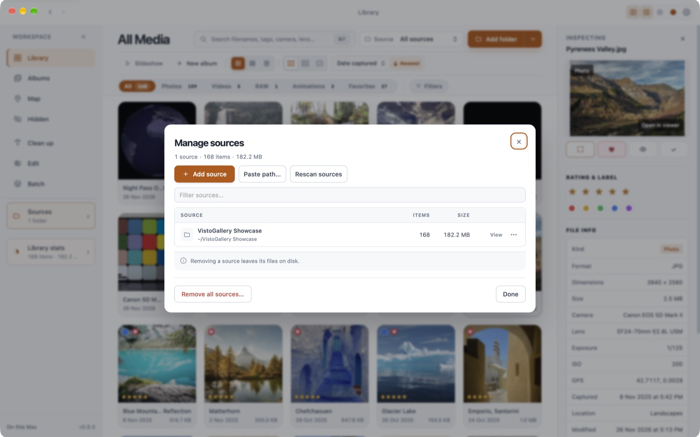

Grid, details & timeline
Dense thumbnail grid, a metadata-rich list view, and a timeline grouped by month.
VistoGallery is a fast photo and video gallery that works on the folders you already have. No import, no cloud, no account, no tracking.

Your files stay where they are. VistoGallery keeps a local catalog next to them and never uploads anything.
Dense thumbnail grid, a metadata-rich list view, and a timeline grouped by month.
Make albums by hand, or save a filter as a Smart Album that keeps itself up to date.
Tag freely, star favorites, and hide items behind Touch ID or your password.
Filter by date, rating, color label, camera, lens, file type, location and orientation.
Exposure, contrast, color and crop. The original is always kept. Export to JPEG, PNG, HEIC or AVIF.
Finds exact duplicates by content hash, compares them side by side, and lets you undo after trashing.
Finds Xcode, npm, Cargo, Go, pip, Gradle and Homebrew caches, build folders and old installers, and marks which ones regenerate.
Open files from Finder, reveal them in Finder, and move items to the macOS Trash so Put Back still works.
No account, no cloud, no telemetry. The catalog lives on your Mac, and the code is open to audit.
Screenshots follow the page theme. Use the moon/sun button at the top to switch.







VistoGallery isn't notarized by Apple yet, so macOS blocks it on first launch. It's a one-time step.
Get the latest build from GitHub Releases and drag VistoGallery to Applications.
Open it once, then go to System Settings → Privacy & Security and click Open Anyway. Or run this in Terminal:
xattr -dr com.apple.quarantine /Applications/VistoGallery.appPick a folder of photos (or paste its path). VistoGallery scans it and builds the catalog locally.